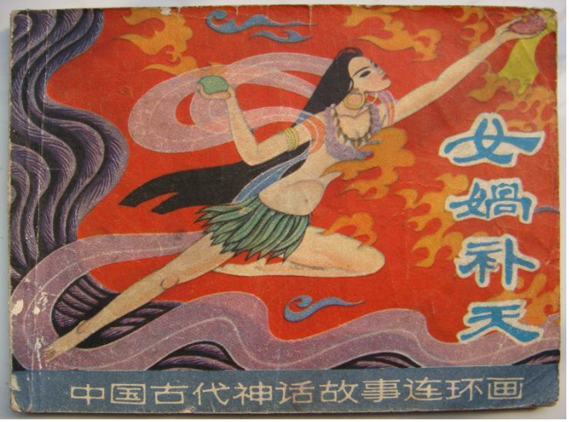

- 方案目标
-
为推动CSS3应用
开发的一套
跨浏览器
实现效果增强和差异的方案
浏览器增强和差异化
百度知识搜索部 梁东杰
liangdongjie@baidu.com
修改时间：2012.7.19（web ppt 2012.7.25）
浏览器增强和差异化

CSS3真的好！
一、CSS3
>>变形、动画很酷
-
- 变换
- transition
-
- 变形
- transform
-
- 动画
- animation
demo
一、CSS3
>>图形修饰功能够震撼
- 透明
- 背景渐变
- 盒子效果：圆角、阴影
- 文字效果：截断、阴影
demo
一、CSS3
>>细节交互脚本的终结者
-
- 状态伪类
- :hover/:focus /:active
-
- 容器控制
- min/max-width
-
- 定位
- position:fixed
demo
一、CSS3
>>模板hack都可以靠边站
-
- 结构匹配
- nth-child系列
demo
一、CSS3
>>终端适配很简单
-
- 终端条件处理
- mediaQuery
demo
一、CSS3
>>轻松应乎普通开发
- 传统关键词
- 切图、改HTML、写JS、私有语法、用Hack、需求改到头大
| 需求 | 传统实现 | CSS3 |
|---|---|---|
| 背景渐变的 | 把背景切下来吧 | linear-gradient |
| 要有阴影 | 把边缘也切下来 | box-shadow |
| 自适应的圆角 | 得补上HTML结构 | border-radius |
| 边缘是半透明 | 给补个透明滤镜吧 | box-shadow |
| 做成三态 | 得写JS帮忙了 | :hover / :active |
| 调整下立体感 | 重新切吧！ | 改css参数 |
demo

可是。。。浏览器环境很糟呀！
二、浏览器限制
>>浏览器分布
某产品5月份情况
| 浏览器 | 占比 |
|---|---|
| IE6 | 21.4% |
| IE7 | 27.13% |
| IE8 | 27.77% |
| IE9 | 2.22% |
| Chrome | 18.94% |
| Safari | - |
| 其他 | - |
demo
二、浏览器限制
>>CSS3环境
-
- IE6~8的落后
- 不支持新特性 / bug很多 / 兼容hack横飞
-
- 现代浏览器的前缀
- -webkit- / -moz- /-o- /-ms-
-
- IE9伪现代
- border-image / muti-columns / transition...
二、浏览器限制
>>低端浏览器
-
- 优雅降级？不易降呀
-
- 图形修饰、动画类可以忽略
- 选择器类，影响可用性
-
- 低端浏览器增强很重要
- 解决差异问题依然值得重视
- 可用性不可忽略
- 差异化或许不可避免

不怕，有它呢！